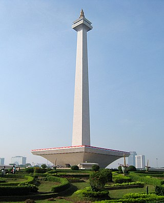
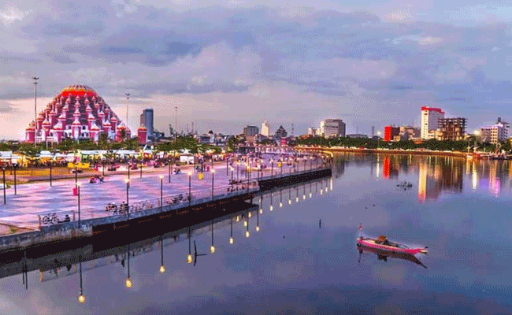
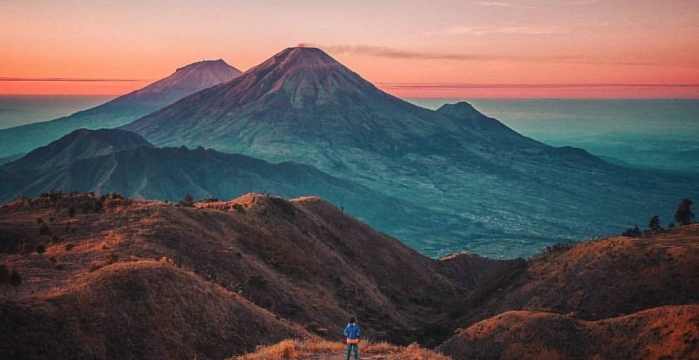

 Monumen Nasional atau yang disingkat dengan Monas atau Tugu Monas adalah monumen peringatan setinggi 132 meter (433 kaki) yang terletak tepat di tengah Lapangan Medan Merdeka, Jakarta Pusat. Monas didirikan untuk mengenang perlawanan dan perjuangan rakyat Indonesia dalam merebut kemerdekaan dari pemerintahan kolonial Kekaisaran Belanda. Pembangunan dimulai pada 17 Agustus 1961 di bawah perintah presiden Soekarno dan diresmikan hingga dibuka untuk umum pada 12 Juli 1975 oleh Presiden Soeharto. Tugu ini dimahkotai lidah api yang dilapisi lembaran emas yang melambangkan semangat perjuangan yang menyala-nyala dari rakyat Indonesia. Lihat Detail
 Pantai Losari Makassar adalah sebuah pantai yang terletak di sebelah barat Kota Makassar, Provinsi Sulawesi Selatan, Indonesia. Pantai ini menjadi tempat bagi warga Makassar untuk menghabiskan waktu pada pagi, sore, dan malam hari menikmati pemandangan matahari tenggelam yang sangat indah. Jarak Pantai Losari dari Bandar Udara Internasional Sultan Hasanuddin kurang lebih 20 kilometer memakan waktu sekitar 30 menit jika melalui Jalan Tol Insinyur Sutami. Lihat Detail
 Pegunungan Dieng (Jawa: ꦥꦒꦸꦤꦸꦔꦤ꧀ꦝꦶꦪꦺꦁ, translit. Pagunungan Dièng) adalah kawasan pegunungan yang membentang dari wilayah barat Kabupaten Wonosobo, wilayah timur Kabupaten Banjarnegara, wilayah selatan Kabupaten Batang dan Kabupaten Pekalongan di Provinsi Jawa Tengah; sekaligus menjadi batas alamiah bagi keempat kabupaten tersebut. Puncak tertinggi di Pegunungan Dieng berada di Gunung Parahu yang memiliki ketinggian lebih dari 2.590 meter di atas permukaan laut. Lihat Detail kembali ke atas